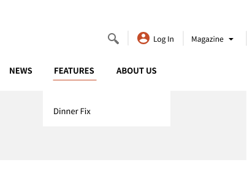
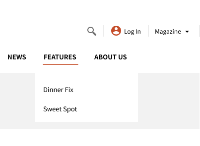
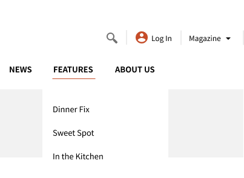

Triggers
- hover on and hover off the menu tab
Rules
ON HOVER
- the thin, orange underline on the tab would start from the left of the tab and travel horizontally to the end of the word
- the sub categories will consequentially ease in 2 seconds in, 1 sub category after another from top to
- the arrow curser turns into the pointer curser
OFF HOVER
- the thin, orange underline on the tab would start to horizontally retract from the right tab and travel to the start of the word
- the sub categories will consequentially ease out 2 seconds in, one sub category after another from bottom to top
- the pointer curser turns into the arrow curser
Feedback
ON HOVER
- the thin, orange underline on the tab would start from the left of the tab and travel horizontally to the end of the word
- the sub categories will consequentially ease in 2 seconds in, 1 sub category after another from top to
- the arrow curser turns into the pointer curser
OFF HOVER
- the thin, orange underline on the tab would start to horizontally retract from the right tab and travel to the start of the word
- the sub categories will consequentially ease out 2 seconds in, one sub category after another from bottom to top
- the pointer curser turns into the arrow curser
Loops and Modes
- not applicable


